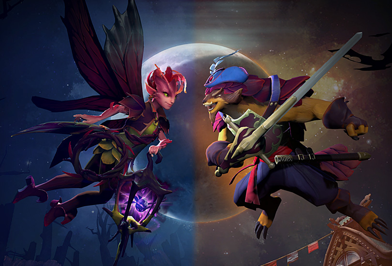
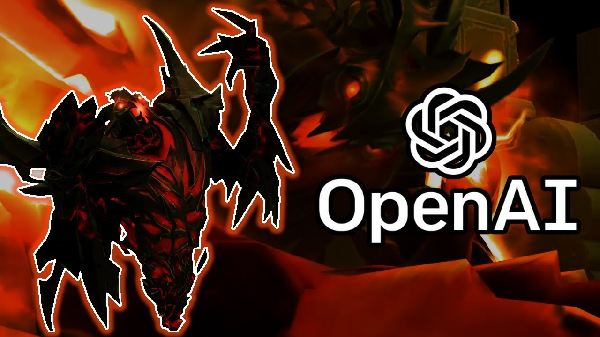

7.07 Update - The Dueling Fates

Dueling Fates collide, as two new heroes-Dark Willow & Pangolier-join the battle of the Ancients.
And neither arrives to the fight empty-handed. Each hero has a debut Immortal item available in the Emblems of the Dueling Fates bundle, which also contains a Ward set, courier, and taunts for both heroes.
Along with the new heroes, Dueling Fates also introduces the 7.07 Gameplay Update; new ranked seasons for MMR; an entirely new game mode; and more. Visit the update page for details on each hero and all the other changes we've made.
Looking beyond today's update, we're also currently reworking the Battle Pass system and will have more information on those changes coming in the future.
For more details click here
Bot defeats top players

Open AI created a bot which beats the world's top professionals at 1v1 matches of Dota-2 under standard tournament rules.
The bot learned the game from scratch by self-play, and does not use imitation learning or tree search.
This is a step towards building AI systems which accomplish well-defined goals in messy, complicated situations involving real humans.
The result is an AI that not only has the fundamentals nailed down, but understands the nuances that take human players a long time to master. It's adept at tricks like zoning (preventing the enemy from hitting your creeps to deny them experience and gold) and raze faking (starting a raze animation to trick an enemy into dodging a non-existent attack). While its actions per minute aren't any better than that of an average flesh-and-bone player, the choices make a huge difference. And it doesn't take too long to learn, either; OpenAI's creation can beat regular Dota 2 bots after an hour of learning, and beat the best humans after just two weeks.
True Sight - The International 2017

Each year, The International grand finals has fans on the edge of their seat because, after all, anything can happen in Dota. But who could have anticipated that Newbee - dominant in the upper bracket - would fall to Team Liquid in an unprecedented three straight games? Our film crew managed to capture what it truly feels like to win AND lose in grand fashion. It was an emotional ride for everyone involved and it's an honor to present to you the next episode of the Valve documentary series, TRUE SIGHT.
TRUE SIGHT is a documentary series that takes you behind the scenes of the journeys of professional Dota 2 teams. This episode follows Team Liquid and Newbee through the grand finals at The International 2017. Pressure builds as the two teams compete for the grand prize of $10.9 million, the largest in eSports history.